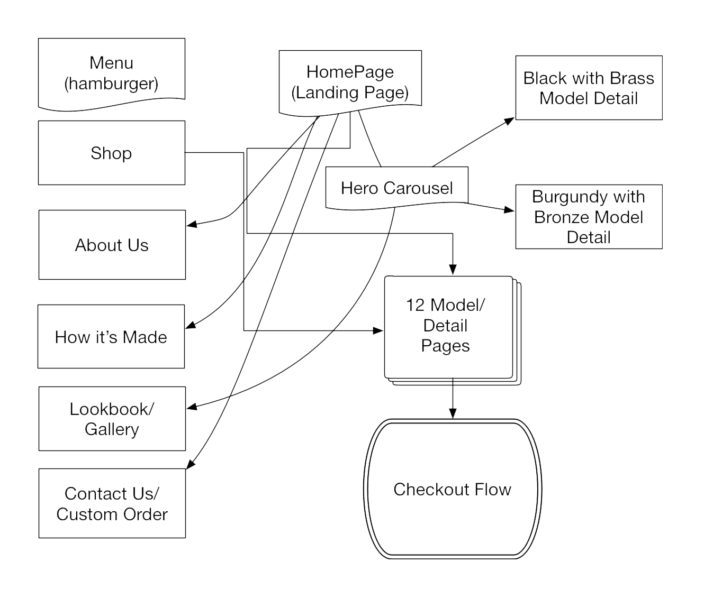
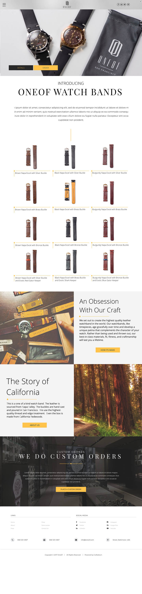
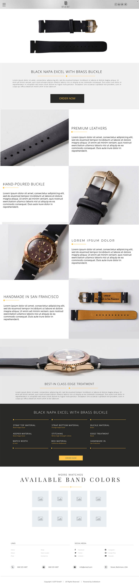

Team: Benjamin Grandy (Designer) Deliverables: Business card design, Website Design, Site Map, Lasercut Watch Bands, Lasercut Boxes
My friend and I started OneOf, which makes beautiful leather watch bands. I was responsible for the marketing, web design, lasercutting the leather and engraving the watch bands and the redwood boxes.
Watches are fine pieces of jewelry and represent a great precision of engineering and craft. They're also assets that stand the test of time and in some cases, get more valuable with age. While so much thought, precision and engineering is dedicated to the creation of great time pieces, watch bands are hardly given a similar level of attention. A typical $100 watch band is made of cheap materials, poorly made, and falls apart within a matter of months. We set out to change this by applying best-in-class materials and craft to every step of the process.
Research
Research consisted of looking at other high-end watch and jewelry brands and seeing how they presented themselves. This can be seen in their brand experience, website design and the in-person experience.
Concept
Most watch bands use a single piece of cheap leather. OneOf uses two pieces of the highest-quality Napa leathers back to back. This way, the inside of the watch is as beautiful as the outside. The edges are finished with traditional leather crafting techniques and the best glue and thread keeps it all together. Lasercutting creates perfect precision when cutting the leathers and holes and allows for personalized engraving. The buckles are individually cast in brass, bronze, silver or gold. Finally, the watch bands are placed in a beautifully box made from salvaged California redwoods.
The name OneOf comes from One-of-a-kind and evokes "One of fifty", like a limited print run. The choice of colors, buckle, materials, and style are released in limited batches, with an engraving on the inside indicating the number of the set e.g. "5/50".
Logo
The choice of typeface, tall letters and thin strokes evokes a sense of elegance that caters to the high-end jewelry market. The logo is the two Os of OneOf. It overlaps in a way that feels like a nice set of cuff links while simultaneously evoking the buckle.
Business Cards
Website Design

OneOf Website Map


Packaging Design
Each watchband is placed in a soft branded OneOf pouch.
Every box includes a watchband removal tool for easy installation and swapping.
The box is laser engraved and made of beautiful California Redwoods.
Every box includes this note:
This is a one of a kind watch band. The leather is sourced from Napa Valley. The buckles are hand cast and poured in San Francisco. We use the highest-quality thread and edge treatment. Even the box is made from California Redwoods. This watchband represents the labor and love put into our craft. Thank you for supporting our journey. We hope to see you again. With gratitude, OneOf Team
The backside of the note says:
If you take care of this watch band, it will last for many years to come. We have selected the highest quality leathers to ensure your watchband ages gracefully and develops its own unique patina over time. We recommend applying a touch of leather conditioner periodically to maintain its grace and luster.